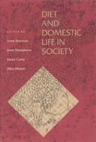

<body bgcolor="#FFFFFF" text="#000000" link="#0000FF" vlink="#CC0000" alink="#CC0000"><center><hr width="350" size="1" align="center" noshade>A collection of case studies reports on dietary practices in a variety of cultures<hr width="350" size="1" align="center" noshade><p><a href="https://cdcshoppingcart.uchicago.edu/Cart/ChicagoBook.aspx?ISBN=9780877227519&&PRESS=temple" target="_top">Buy this book!</a> | <a href="https://cdcshoppingcart.uchicago.edu/Cart/Cart.aspx?PRESS=temple" target="_top">View Cart</a> | <a href="https://cdcshoppingcart.uchicago.edu/Cart/Cart.aspx?PRESS=temple" target="_top">Check Out</a></p><p></p></center><!--none//--><h1>Diet and Domestic Life in Society</h1>
<h3>edited by Anne Sharman, Janet Theophano, Karen Curtis and Ellen Messer</h3>
<P>cloth 0-87722-751-9 $41.50, Dec 90, <FONT COLOR=#990033>Out of Stock Unavailable</FONT>
<BR> 288 pp
</P><p>This book is a collection of case studies of dietary practices in a variety of cultures and societies: Malaysia, Mexico, Guatemala, Bangladesh. Southern Belize, India, and two urban settings in the United States. The authors&#151all anthropologists&#151report on the foods that are eaten, the reasons for the choices, and who makes the choices. Drawing on a wide range of approaches&#151including cognitive, symbolic, semiotic, ecological, and Marxist analyses&#151the authors of these ethnographic studies suggest the rich possibilities of this diversified approach for studying various aspects of diet and social relations.
<BR>&nbsp;<h2>Contents</h2><P>
<p>1. Introduction &#150 the Editors
<br>2. Where the Wild Things Are &#150 Carol Laderman
<br>3. Getting Through Three Meals a Day: Diet, Domesticity, and Cash Income in a Mexican Community &#150 Ellen Messer
<br>4. The Impact of Health on Women�s Food-Procurement Strategies on a Guatemalan Plantation &#150 Mary Scrimshaw and Sheila Cosminsky
<br>5. Socioeconomic and Cultural Factors Affecting Inter-Household and Intrahousehold Food Distribution in Rural and Urban Bangladesh &#150 Najma Rizvi
<br>6. Kin Ties, Food, and Remittances in a Garifuna Village in Southern Belize &#150 Joseph 0. Palacio
<br>7. Sisters, Mothers, and Daughters Food Exchange and Reciprocity in an Italian American Community &#150 Janet Theophano and Karen Curtis
<br>8. From Generation to Generation, Resources, Experience, and Orientation in the Dietary Patterns of Selected Urban American Households &#150 Anne Sharman
<br>9. Dietary Improvisation in an Agricultural Economy &#150 Arjun Appadurai
<br>10. Decision Analysis in Nutrition Studies &#150 Sutti Ortiz
<br>11. Diet and Domestic Life in Society: Directions for Research and Implications for Policy &#150 the Editors
</P><BR>&nbsp;<H2>About the Author(s)</H2>
<P><b>Anne Sharman</b> is an anthropologist who is studying for her R.D. at Drexel University.</P>
<P><b>Janet Theophano</b> is Assistant Dean and Assistant Director of the College of General Studies at the University of Pennsylvania and also Adjunct Assistant Professor of Folklore and Director of the Social Gerontology Program.</P>
<P><b>Karen Curtis</b> is Associate Policy Scientist and Assistant Professor in the College of Urban Affairs and Public Policy at the University of Delaware.</P>
<P><b>Ellen Messer</b> is Associate Professor in the Alan Shawn Feinstein World Hunger Program at Brown University.</P>
<BR><H2>Subject Categories</H2>
<p><A HREF="/tempress/anthropology.html" TARGET="_top">Anthropology</a>
</p>
<p align="center"><a href="https://cdcshoppingcart.uchicago.edu/Cart/ChicagoBook.aspx?ISBN=9780877227519&&PRESS=temple" target="_top">Buy this book!</a> | <a href="https://cdcshoppingcart.uchicago.edu/Cart/Cart.aspx?PRESS=temple" target="_top">View Cart</a> | <a href="https://cdcshoppingcart.uchicago.edu/Cart/Cart.aspx?PRESS=temple" target="_top">Check Out</a></p><p><font face="Arial" size="1"><a href="copyright.html" onMouseOver="window.status='Web Copyright Policy';return true;" onMouseOut="window.status=''" title="Web Copyright Policy">&copy;</a> 2015 <a href="http://www.temple.edu" target="new" onMouseOver="window.status='Link to Temple University home page';return true;" onMouseOut="window.status=''" title="Link to Temple University home page">Temple University</a>. All Rights Reserved. http://www.temple.edu/tempress/titles/760_reg.html</font></p>